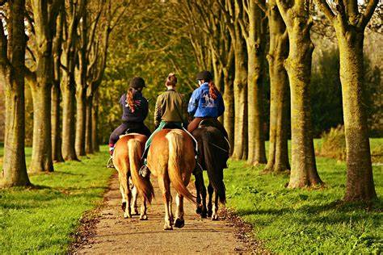

|

Physical Exercise: Riding engages core muscles, improves balance, and burns calories. It’s a great workout for both riders and horses.
Mental Well-Being: Being outdoors, surrounded by nature, reduces stress and promotes relaxation. The rhythmic motion of riding can be therapeutic.
Bonding with Horses: Trail riding allows riders to connect with their horses, building trust and companionship.
Exploration: Trails take you to scenic places you might not otherwise discover. It’s an adventure!
Community: Joining trail riding groups fosters camaraderie and shared experiences.
|
Skill Development: Riding lessons teach proper techniques, safety practices, and horse care. They help riders progress in their equestrian journey.
Confidence Building: Mastering new skills and overcoming challenges boosts self-esteem and resilience. Riding lessons encourage personal growth.
Goal Setting: Setting riding goals, such as learning a new discipline or competing in shows, provides motivation and a sense of accomplishment.
Social Interaction: Riding lessons offer opportunities to meet like-minded individuals, share experiences, and learn from others.
Lifelong Learning: Equestrian education is a continuous process that enriches the mind and spirit. There’s always something new to discover in the world of horses.
|